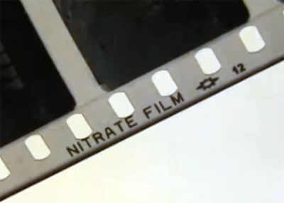

AFormatos Audiovisuales
Películas


35mm

16mm

9.5mm

Super 8mm

Regular 8mm
35mm
Descripción: Este formato de película está compuesto por una emulsión foto-química (a color o en blanco y negro) que está depositada sobre una base translúcida de plástico con una rueda dentada en uno o en los dos lados de la cinta, la cual puede contener una banda sonora óptica o magnética. El ancho o calibre de la cinta es de 35mm. Es un formato poco común en las bibliotecas pero es habitual encontrarlo en museos y archivos.
Historia: La cinta de calibre de 35mm fue desarrollada en 1893 y todavía se encuentra en uso. Las películas producidas antes de 1950 generalmente contienen nitrato celuloso altamente inflamable en su base plástica, por lo cual deben ser manejadas y almacenadas con gran cuidado. La base de las películas producidas después de 1950 además de ser de acetato, también puede ser de poliéster. El deterioro del acetato es coloquialmente conocido como “síndrome de vinagre”. El poliéster es un plástico estable, y si se almacena adecuadamente puede durar muchos años.
Propenso a los siguientes problemas: Las películas son susceptibles a los siguientes problemas: deterioro del nitrato (si tienen una base de nitrato), deterioro del acetato/síndrome de vinagre, moho, daño físico (ruptura de la rueda dentada, empalmes deficientes, rayones, o deterioro del mag stock).
Nivel de Riesgo Inherente al Formato: En el caso de películas hechas de celulosa de nitrato, el riesgo de preservación es muy alto. Dado que la cinta de película es un formato obsoleto, cualquier formato de película debe ser considerado un riesgo moderado (NFPF, 2004).
Riesgos de la reproducción: Cada medio audiovisual requiere equipos de reproducción para tener acceso a su contenido. Las películas son la excepción, ya que la imagen puede ser vista sin utilizar un proyector. Sin embargo, para ser completamente interpretada hay que utilizar un proyector. La guía publicada por el National Film Preservation Foundation's (NFPF) en el 2004 recomienda “para cada calibre de cinta hay una serie de proyectores y equipos de reproducción diseñados para trabajar juntos. Los fabricantes hacen la cinta con perforaciones a lo largo del costado para mover la cinta a través de proyectores y cámaras del mismo calibre” (p.6). Esto quiere decir que usted siempre debe utilizar un proyector del mismo calibre de la cinta para su reproducción.
La película se deteriora más a través de la constante reproducción, especialmente al comienzo y al final de la cinta. Las cintas pueden trabarse dentro del proyector o los agujeros de la rueda dentada pueden desalinearse del proyector y romperse. Proyectar una película deteriorada conlleva un alto riesgo ya que “los proyectores pueden causar daños adicionales a las películas que se han encogido, roto, o deteriorado” (NFPF, 2004, p.20). Recomendamos que un técnico(a) entrenado(a) en el manejo y preservación de películas inspeccione la cinta y el proyector antes de su reproducción.
Recomendaciones para el Almacenamiento (+/- 2)
| Temperatura Ideal (grados F) | Temperatura Aceptable (grados F) |
|---|---|
| 0-32º | 33-54º |
16mm
Descripción: Este formato de película está compuesto por una emulsión foto-química (a color o en blanco y negro) que está depositada sobre una base translúcida de plástico con una rueda dentada en uno o en los dos lados de la cinta, la cual puede contener una banda sonora óptica o magnética. El ancho o calibre de la cinta es de 16mm. Es un formato muy común en las bibliotecas, museos y archivos.
Historia: La cinta de 16mm fue desarrollada por Kodak en 1923 y aún es utilizada. Esta cinta solo utiliza bases de acetato o poliéster. El acetato presenta un deterioro característico comunmente conocido como “síndrome de vinagre”. El poliéster es un material estable, si es almacenado en las condiciones adecuadas, por lo tanto las cintas de poliéster tpueden tener una larga vida.
Susceptible a los siguientes problemas: Las películas de 16mm son suceptibles a los siguientes problemas: deterioro del acetato/síndrome de vinagre (si tiene una base de acetato), moho, daños físicos (ruptura de la rueda dentada, empalmes deficientes, rayones, o deterioro del mag stock).
Nivel de Riesgo Inherente al Formato: En el caso de películas hechas de celulosa de nitrato, el riesgo de preservación es muy alto. Dado que la cinta de película es un formato obsoleto, cualquier formato de película debe ser considerado un riesgo moderado (NFPF, 2004).
Riesgos de la reproducción: Cada medio audiovisual requiere equipos de reproducción para tener acceso a su contenido. Las películas son la excepción, ya que la imagen puede ser vista sin utilizar un proyector. Sin embargo, para ser completamente interpretada hay que utilizar un proyector. La guía publicada por el National Film Preservation Foundation's (NFPF) en el 2004 recomienda “para cada calibre de cinta hay una serie de proyectores y equipos de reproducción diseñados para trabajar juntos. Los fabricantes hacen la cinta con perforaciones a lo largo del costado para mover la cinta a través de proyectores y cámaras del mismo calibre” (p.6). Esto quiere decir que usted siempre debe utilizar un proyector del mismo calibre de la cinta para su reproducción. La película se deteriora más a través de la constante reproducción, especialmente al comienzo y al final de la cinta.
Las cintas pueden trabarse dentro del proyector o los agujeros de la rueda dentada pueden desalinearse del proyector y romperse. Proyectar una película deteriorada conlleva un alto riesgo ya que “los proyectores pueden causar daños adicionales a las películas que se han encogido, roto, o deteriorado” (NFPF, 2004, p.20). Recomendamos que un técnico(a) entrenado(a) en el manejo y preservación de películas inspeccione la cinta y el proyector antes de su reproducción.
Recomendaciones para el Almacenamiento (+/- 2)
| Temperatura Ideal (grados F) | Temperatura Aceptable (grados F) |
|---|---|
| 0-32º | 33-54º |
9.5mm
Descripción: Este formato de película está compuesto por una emulsión foto-química (a color o en blanco y negro) que está depositada sobre una base translúcida de plastico, con las perforaciones de la rueda dentada localizadas en el centro de la cinta, entre cada imágen. La cinta puede contener una banda sonora magnética que corre a lo largo de un lado de la misma. There may be a magnetic soundtrack running down one side of the film strip. El ancho o calibre de la cinta es de 9.5mm. Es un formato que no es común en los Estados Unidos, pero puede serlo en Europa.
Historia: Este formato de cinta de película para aficionados fue introducido al Mercado por Pathe alrededor de 1920. La base de estas películas es de acetato lo cual las hace suceptibles al “síndrome de vinagre”.
Susceptible a los siguientes problemas: Las películas de 9.5mm son suceptibles a los siguientes problemas: deterioro del acetato/síndrome de vinagre (si tiene una base de acetato), moho, daños físicos (ruptura de la rueda dentada, empalmes deficientes, rayones, o deterioro del mag stock).
Nivel de Riesgo Inherente al Formato: Dado que este formato es poco conocido y ya es obsoleto el riesgo de preservación es muy alto.
Riesgos de la reproducción: Cada medio audiovisual requiere equipos de reproducción para tener acceso a su contenido. Las películas son la excepción, ya que la imagen puede ser vista sin utilizar un proyector. Sin embargo, para ser completamente interpretada hay que utilizar un proyector. La guía publicada por el National Film Preservation Foundation's (NFPF) en el 2004 recomienda “para cada calibre de cinta hay una serie de proyectores y equipos de reproducción diseñados para trabajar juntos. Los fabricantes hacen la cinta con perforaciones a lo largo del costado para mover la cinta a través de proyectores y cámaras del mismo calibre” (p.6). Esto quiere decir que usted siempre debe utilizar un proyector del mismo calibre de la cinta para su reproducción.
La película se deteriora más a través de la constante reproducción, especialmente al comienzo y al final de la cinta. Las cintas pueden trabarse dentro del proyector o los agujeros de la rueda dentada pueden desalinearse del proyector y romperse. Proyectar una película deteriorada conlleva un alto riesgo ya que “los proyectores pueden causar daños adicionales a las películas que se han encogido, roto, o deteriorado” (NFPF, 2004, p.20). Recomendamos que un técnico(a) entrenado(a) en el manejo y preservación de películas inspeccione la cinta y el proyector antes de su reproducción.
Recomendaciones para el Almacenamiento (+/- 2)
| Temperatura Ideal (grados F) | Temperatura Aceptable (grados F) |
|---|---|
| 0-32º | 33-54º |
Super 8mm
Descripción: Este formato de película está compuesto por una emulsión foto-química (a color o en blanco y negro) que está depositada sobre una base translúcida de plastico, con las perforaciones de la rueda dentada localizadas a un lado de la cinta, con una banda sonora magnética (si la hay) que corre a lo largo de un lado de la misma. El ancho o calibre de la cinta es de 8mm. Este es un formato muy común en las bibliotecas, museos y archivos, especialmente en colecciones de películas caseras.
Historia: La cinta Super 8mm due desarrollada por Kodak alrededor de 1965 y todavía está en uso. Este formato se diferencia del 8mm por sus imágenes más grandes y sus agujeros de rueda dentada pequeños. La cinta Super 8mm solo tiene bases de acetato o de poliéster. El deterioro del acetato es coloquialmente conocido como “síndrome de vinagre”. El poliéster es un plástico estable, y si se almacena adecuadamente puede durar muchos años.
Susceptible a los siguientes problemas: Las películas Super 8mm son susceptibles a los siguientes problemas: deterioro del acetato/síndrome de vinagre (si tiene una base de acetato), moho, daños físicos (ruptura de la rueda dentada, empalmes deficientes, rayones, o deterioro del mag stock).
Nivel de Riesgo Inherente al Formato: Dado que este formato ya es obsoleto el riesgo de preservación es moderado (NFPF, 2004).
Riesgos de la reproducción: Cada medio audiovisual requiere equipos de reproducción para tener acceso a su contenido. Las películas son la excepción, ya que la imagen puede ser vista sin utilizar un proyector. Sin embargo, para ser completamente interpretada hay que utilizar un proyector. La guía publicada por el National Film Preservation Foundation's (NFPF) en el 2004 recomienda “para cada calibre de cinta hay una serie de proyectores y equipos de reproducción diseñados para trabajar juntos. Los fabricantes hacen la cinta con perforaciones a lo largo del costado para mover la cinta a través de proyectores y cámaras del mismo calibre” (p.6). Esto quiere decir que usted siempre debe utilizar un proyector del mismo calibre de la cinta para su reproducción.
La película se deteriora más a través de la constante reproducción, especialmente al comienzo y al final de la cinta. Las cintas pueden trabarse dentro del proyector o los agujeros de la rueda dentada pueden desalinearse del proyector y romperse. Proyectar una película deteriorada conlleva un alto riesgo ya que “los proyectores pueden causar daños adicionales a las películas que se han encogido, roto, o deteriorado” (NFPF, 2004, p.20). Recomendamos que un técnico(a) entrenado(a) en el manejo y preservación de películas inspeccione la cinta y el proyector antes de su reproducción.
Recomendaciones para el Almacenamiento (+/- 2)
| Temperatura Ideal (grados F) | Temperatura Aceptable (grados F) |
|---|---|
| 0-32º | 33-54º |
8mm
Descripción: Este formato de película está compuesto por una emulsión foto-química (a color o en blanco y negro) que está depositada sobre una base translúcida de plastico, con las perforaciones de la rueda dentada localizadas a un lado de la cinta, con una banda sonora magnética (si la hay) que corre a lo largo de un lado de la misma. El ancho o calibre de la cinta es de 8mm. Este es un formato muy común en las bibliotecas, museos y archivos, especialmente en colecciones de películas caseras.
Historia: La cinta de calibre de 8mm, también llamada “Regular de 8mm” para diferenciarla de la Super 8mm, fue desarrollada por Kodak en 1932. Este formato se diferencia del Super 8mm por sus imágenes más pequeñas y sus agujeros de rueda dentada más grandes. La cinta de 8mm solo tiene bases de acetato, y su deterioro es coloquialmente conocido como “síndrome de vinagre”.
Susceptible a los siguientes problemas: Las películas de 8mm son susceptibles a los siguientes problemas: deterioro del acetato/síndrome de vinagre (si tiene una base de acetato), moho, daños físicos (ruptura de la rueda dentada, empalmes deficientes, rayones, o deterioro del mag stock).
Nivel de Riesgo Inherente al Formato: Dado que este formato ya es obsoleto el riesgo de preservación es alto (NFPF, 2004).
Riesgos de la reproducción: Cada medio audiovisual requiere equipos de reproducción para tener acceso a su contenido. Las películas son la excepción, ya que la imagen puede ser vista sin utilizar un proyector. Sin embargo, para ser completamente interpretada hay que utilizar un proyector. La guía publicada por el National Film Preservation Foundation's (NFPF) en el 2004 recomienda “para cada calibre de cinta hay una serie de proyectores y equipos de reproducción diseñados para trabajar juntos. Los fabricantes hacen la cinta con perforaciones a lo largo del costado para mover la cinta a través de proyectores y cámaras del mismo calibre” (p.6). Esto quiere decir que usted siempre debe utilizar un proyector del mismo calibre de la cinta para su reproducción.
La película se deteriora más a través de la constante reproducción, especialmente al comienzo y al final de la cinta. Las cintas pueden trabarse dentro del proyector o los agujeros de la rueda dentada pueden desalinearse del proyector y romperse. Proyectar una película deteriorada conlleva un alto riesgo ya que “los proyectores pueden causar daños adicionales a las películas que se han encogido, roto, o deteriorado” (NFPF, 2004, p.20). Recomendamos que un técnico(a) entrenado(a) en el manejo y preservación de películas inspeccione la cinta y el proyector antes de su reproducción.
Recomendaciones para el Almacenamiento (+/- 2)
| Temperatura Ideal (grados F) | Temperatura Aceptable (grados F) |
|---|---|
| 0-32º | 33-54º |
Base de la Cinta
Esta pregunta puede requerir que usted desenrolle la película para responderla. Recomendamos que no haga esto sin antes haber leído nuestra sección dedicada al manejo de las cintas de película. Desenrollar la cinta conlleva un riesgo. Si usted no puede o no quiere hacerlo, y no tiene alguna otra fuente de documentación acerca de la película en cuestión, recomendamos que haga click en “No sé”.
Consideraciones Generales Acerca de las Bases (más imágenes e información a continuación):
Cuando se habla de la base de la cinta, nos estamos refiriendo a la capa de plástico que sostiene la emulsión (la capa que contiene la imagen) en la película.
- Las películas de Nitrato tienen una mayor prioridad de preservación. Estas usualmente tienen escrita la palabra “Nitrate” a lo largo del borde de la cinta (ver imagen a continuación)
- Las cintas de calibre de 16mm, 9.5mm, 8mm o Super 8 no estan hechas a base de Nitrato
- El olor de la cinta de Nitrato es comúnmente descrito como el olor de medias sucias
- La cinta de acetato tiene una prioridad alta de preservación
- Las cintas de calibre de 35mm, 16mm, 8mm y Super 8 pueden tener bases de acetato
- Si la cinta de acetato se está deteriorando, va a producir un olor a vinagre
- La cinta de poliéster tiene una prioridad de preservación baja
- Es muy fácil distinguir entre la cinta de acetato o de poliéster. Sostenga el rollo a trasluz (ver imagen a continuación). Si la luz es visible a través de la cinta, usted tiene una cinta a base de poliéster. Si es opaca, entonces la cinta es a base de acetato. (Nótese que lo opuesto ocurre en las cintas de audio electromagnéticas)
| Nitrato | Acetato | Poliéster |
|---|---|---|
| Sólo se encuentra en películas de 35mm | La mayoría de las películas fabricadas despues de 1950; algunas producidas hacia 1930 | Fabricadas después de 1955; marcas mas communes: Chronar (Dupont), ESTAR (Kodak), y Mylar |
| Películas fabricadas antes de 1951 | La palabra "SAFTEY" aparece frecuentemente a lo largo del borde de la cinta | No se rompe facilmente, no tiene empalmes de cemento |
| Si la película fue fabricada despues de 1920 hasta 1950, puede tener la palabra "NITRATE" impresa a lo largo del borde de la cinta | Sostenga el rollo de cinta a contra luz. Si NO ve luz pasando a través del rollo, es probable que sea una cinta de acetato. | Sostenga el rollo de cinta a contra luz. Si la luz pasa a través del rollo, es probable que sea una cinta de poliéster. Composición de la cinta: |
Composición de la cinta:
La película está compuesta de dos capas – la emulsión, sobre la cual está depositado el material foto-sensible, y la capa base más gruesa, transparente y plástica, la cual es la base de la emulsión. La base esta generalmente compuesta de uno de tres tipos de plástico: nitrato, acetato o poliéster. Estas pueden ser identificadas de acuerdo a diferentes características, especialmente la fecha y el calibre. La primera cinta a base de acetato fue introducida al mercado en 1909 para evitar los riesgos de trabajar con cinta de nitrato, pero aún así, esta también se deteriora con el tiempo y las malas condiciones de almacenamiento.
Nitrato
La mayoría de las cintas de 35mm producidas antes de 1950 tienen bases de nitrato. El nitrato es un material inflamable y volátil, y los incendios que este causa son casi imposibles de extinguir una vez iniciados. El nitrato se puede incendiar a temperaturas relativamente bajas, de los 30° F a 105°F dependiendo del estado de deterioro. Hacia 1920 Kodak comenzó a marcar las películas de nitrato con la palabra “NITRATE” a lo largo del orillo de la cinta.

Cinta identificada como nitrato
Imágen de un video de bolexmovie:
http://www.youtube.com/user/bolexmovie
Acetato
Las cintas de acetato, en sus diferentes manifestaciones como el diacetato de celulosa de 1909 o el triacetato de celulosa de 1940, fue una gran mejoría a los riesgos presentes en las cintas de nitrato, por lo que las cintas de acetato se comenzaron a llamar “cintas de seguridad”. Los fabricantes de estas cintas las comenzaron a identificar escribiendo la palabra “SAFETY” a lo largo del borde de las cintas más antiguas.

Película de Seguridad
Imágen Cortesía de
Manuscripts Department, Wilson Library,
University of North Carolina at Chapel Hill
Para identificar las películas de acetato coloque el rollo de cinta a contraluz. Si la luz NO traspasa el rollo (la cinta se verá opaca), es muy probable que sea una cinta de acetato. Las películas de acetato vienen en una variedad de calibres: 35mm, 28mm, 16mm, 9.5mm, Regular 8mm, y Súper 8mm.

Poliéster (izq.) comparado al acetato (der.) – El poliéster deja pasar la luz, al contrario del acetato. Poliéster
Poliéster
El poliéster es el tipo de cinta más desarrollado en los últimos años. Fue inicialmente desarrollado a mediados de la década de los 50s, y continúa siendo el estándar de preservación para películas en archivos ya que tiene una durabilidad incomparable. No se puede romper fácilmente, y su composición química lo hace muy estable. Usted puede identificar una cinta de poliéster si ve que la luz traspasa el rollo de cinta.

Cinta de poliéster sostenida a contraluz – nótese como la cinta parece “brillar” por la luz pasando a través de la misma.
 Esta página es parte del Audiovisual Self-Assessment Program (AvSAP), una herramienta de evaluación para la preservación financiada por el IMLS. AvSAP fue diseñada en la Biblioteca de la University of Illinois at Urbana-Champaign. Para mayor información acerca de AvSAP y un enlace al programa, visite:
Esta página es parte del Audiovisual Self-Assessment Program (AvSAP), una herramienta de evaluación para la preservación financiada por el IMLS. AvSAP fue diseñada en la Biblioteca de la University of Illinois at Urbana-Champaign. Para mayor información acerca de AvSAP y un enlace al programa, visite:
http://www.library.illinois.edu/prescons/services/av_self_assesment_program.html